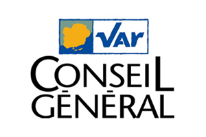
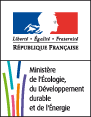

Reactis (Aix-en-Provence)
Développement du nouveau service de recherche pour le projet refonte du poste de travail MyWay (55K
j/h) :
- Architecture, gestion du projet (Scrum master),
- Pilotage de 2 ressources en mode Agile.
- Développement des services REST de recherche,
- Développement de la couche présentation,
- Validation et mise en production.
Environnement technique :
- Java 1.7, Web (HTML5, LESS, TypeScript),
- Solution Google Search Appliance (7.2, 7.4),
- Visual Studio 2013, AngularJS, Gulp,
- Eclipse, Jboss, Maven, Jenkins, Nexus, TFS.
Responsabilité, gestion et développement d’outils pour le moteur de recherche des caisses d’épargne
et IT-CE :
- Prise en charge du projet,
- Relation client avec les caisses d’épargne,
- Gestions des demandes d’évolutions,
- Gestion de la maintenance,
- Montage de l’environnement de production,
- Développement de solutions applicatives autour du projet,
- Validation et mise en production,
- Pilotage de 2 ressources.
Environnement technique :
- Java 1.6 (XSL), Web (HTML5, CSS (SASS + LESS), Javascript),
- Solution Google Search Appliance (6.14, 7.0, 7.2),
- RHEL 6.5, Tomcat (6, 7),
- MongoDB, Docker,
- WebStorm, NodeJS, AngularJS,
- Eclipse, Maven, Jenkins, Nexus, SVN, GIT.
Développement pour les produits assurances (IARDS) de la Caisse d'épargne :
- Développement des services métiers,
- Validation et mise en production.
Environnement technique :
- J2EE (Java 1.5), Spring IOC, Hibernate,
- Eclipse, Maven, Jenkins, Nexus, SVN.
Evolution du site internet du CG 83 :
- Spécification technique,
- Validation et mise en production de l’ensemble.
Environnement technique :
- Liferay 5.2, Java, Web (JSP/SASS/Javascript/jQuery),
- Eclipse, Ant, GIT.
Mise en place de l’intranet du CG 83 :
- Spécification fonctionnelle,
- Paramétrage de fonctionnalités de l’intranet,
- Mise en place d’un Hook (customisation profonde de Liferay),
- Développement d’une Portlet de synchronisation pour les utilisateurs et les organisations,
- Validation et mise en production de l’ensemble.
Environnement technique :
- Liferay 6, Spring MVC, Java, Web (JSP/SASS/Javascript/jQuery),
- Eclipse, Maven, GIT, Hudson/Jenkins, Nexus.
Responsable d’application et développement sur la TMA PARADES et MD, groupe d’application du
SITR
pour
le ministère du développement durable :
- Contact client,
- Gestion des demandes d’évolutions,
- Ecriture des spécifications fonctionnelles et techniques,
- Développement et tests unitaires,
- Validation, Recette,
- Accompagnement à la mise en production,
- Documentation utilisateurs (aide en ligne, aide au format livre)
Environnement technique :
- J2EE : Struts 2, Spring, hibernate, JSTL, OGNL,
- JSP,CSS, Javascript, Ajax,
- SQL, PL/SQL sous TOAD,
- Base de données Oracle 10g,
- SVN, Hudson, jUnit.
Ingénieur d’études et développements J2EE
Développement sur la TMA GRECO, PARADES et MD, groupe d’application du SITR pour le ministère du
développement durable :
- Ecriture des spécifications fonctionnelles et techniques,
- Développement et tests unitaires,
- Validation, Recette
- Accompagnement à la mise en production
- Documentation utilisateurs (aide en ligne, aide au format livre).
Environnement technique :
- J2EE : Struts 2, Spring, hibernate, JSTL, OGNL,
- JSP,CSS, Javascript, Ajax,
- SQL, PL/SQL sous TOAD,
- Base de données Oracle 10g,
- SVN, Hudson, jUnit.
Juillet 2013 - Octobre 2016 :
Ingénieur d’études et développements J2EE,
IT Caisse d'épargne,
Secteur : Banques et assurances.
Depuis Février 2013 en cours :
Ingénieur d’études et développements J2EE - Liferay,
Conseil général du Var (CG 83),
Secteur : Conseil général.

Octobre 2010 - Juin 2013 :
Ingénieur d’études et développements J2EE,
Ministère de l'Ecologie, du Développement durable, des Transports et du Logement,
Secteur : Transport.

Octobre 2010 - Juin 2013 :
Responsable d’application,
Ministère de l'Ecologie, du Développement durable, des Transports et du Logement,
Secteur : Transport.